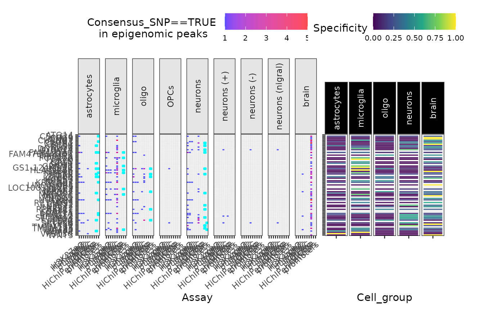

R/peak_overlap_plot.R
peak_overlap_plot.RdPlot overlap between some SNP group and various epigenomic data
peak_overlap_plot(
merged_DT,
snp_filter = "Consensus_SNP==TRUE",
force_new = FALSE,
include.NOTT2019_peaks = TRUE,
include.NOTT2019_enhancers_promoters = TRUE,
include.NOTT2019_PLACseq = TRUE,
include.CORCES2020_scATACpeaks = TRUE,
include.CORCES2020_Cicero_coaccess = TRUE,
include.CORCES2020_bulkATACpeaks = TRUE,
include.CORCES2020_HiChIP_FitHiChIP_coaccess = TRUE,
include.CORCES2020_gene_annotations = TRUE,
plot_celltype_specificity = TRUE,
plot_celltype_specificity_genes = FALSE,
facets_formula = ". ~ Cell_type",
show_plot = TRUE,
label_yaxis = TRUE,
x_strip_angle = 90,
x_tick_angle = 40,
drop_empty_cols = FALSE,
fill_title = paste(snp_filter, "\nin epigenomic peaks"),
save_path = FALSE,
height = 11,
width = 12,
subplot_widths = c(1, 0.5),
verbose = TRUE
)Don't use previously downloaded files.
Plot SNP subset overlap with peaks from cell-type-specific bulk ATAC, H3K27ac, and H3K4me3 assays.
Plot SNP subset overlap with cell enhancers and promoters.
Plot SNP subset overlap with cell-type-specific scATAC-seq peaks.
Plot SNP subset overlap with Cicero coaccessibility peaks (derived from scATACseq).
Other summarise:
CS_bin_plot(),
CS_counts_plot(),
plot_dataset_overlap(),
super_summary_plot()
#### Data ####
merged_DT <- echodata::get_Nalls2019_merged()
#### Consensus SNPs #####
gg_peaks <- echoannot::peak_overlap_plot(
merged_DT = merged_DT,
plot_celltype_specificity = TRUE)
#> Importing previously downloaded files: /github/home/.cache/R/echoannot/NOTT2019_epigenomic_peaks.rds
#> ++ NOTT2019:: 634,540 ranges retrieved.
#> Converting dat to GRanges object.
#> 113 query SNP(s) detected with reference overlap.
#> ++ NOTT2019:: Getting regulatory regions data.
#> Importing Astrocyte enhancers ...
#> Importing Astrocyte promoters ...
#> Importing Neuronal enhancers ...
#> Importing Neuronal promoters ...
#> Importing Oligo enhancers ...
#> Importing Oligo promoters ...
#> Importing Microglia enhancers ...
#> Importing Microglia promoters ...
#> Converting dat to GRanges object.
#> Converting dat to GRanges object.
#> 48 query SNP(s) detected with reference overlap.
#> ++ NOTT2019:: Getting interaction anchors data.
#> Importing Microglia interactome ...
#> Importing Neuronal interactome ...
#> Importing Oligo interactome ...
#> Converting dat to GRanges object.
#> 52 query SNP(s) detected with reference overlap.
#> Converting dat to GRanges object.
#> 44 query SNP(s) detected with reference overlap.
#> CORCES2020:: Extracting overlapping cell-type-specific scATAC-seq peaks
#> Converting dat to GRanges object.
#> 13 query SNP(s) detected with reference overlap.
#> + CORCES2020:: Cicero coaccessibility scores identified for 2 / 13 peak hits.
#> CORCES2020:: Annotating peaks by cell-type-specific target genes
#> CORCES2020:: Extracting overlapping bulkATAC-seq peaks from brain tissue
#> Converting dat to GRanges object.
#> 4 query SNP(s) detected with reference overlap.
#> CORCES2020:: Annotating peaks by bulk brain target genes
#> Converting dat to GRanges object.
#> 70 query SNP(s) detected with reference overlap.
#> Converting dat to GRanges object.
#> 72 query SNP(s) detected with reference overlap.
#> + CORCES2020:: Found 142 hits with HiChIP_FitHiChIP coaccessibility loop anchors.

#### UCS SNPs ####
if (FALSE) {
gg_peaks <- echoannot::peak_overlap_plot(
merged_DT = merged_DT,
snp_filter = "Support>0",
fill_title = "UCS SNPs in epigenomic peaks")
}